Learning Module 2 Time Value of Money in Finance - Part 2: Implied Return and Growth
Volume 1: Quantitative Methods
Learning Module 2 Time Value of Money in Finance
Part 2/4: Implied Return and Growth (PDF Pages 68–76)
Tập 1: Phương pháp Định lượng (Volume 1: Quantitative Methods)
Học phần 2: Giá trị Thời gian của Tiền trong Tài chính (Learning Module 2: Time Value of Money in Finance)
Phần 2/4: Tỷ suất sinh lợi ngầm định và Tốc độ tăng trưởng ngầm định (Implied Return and Growth) (Trang PDF 68–76)
| Share Price | LT Growth Rate |
|---|---|
| 11.66 | 0% |
| 13.05 | 2% |
| 14.94 | 4% |
| 17.67 | 6% |
| Giá cổ phiếu (Share Price) | Tốc độ tăng trưởng dài hạn (LT Growth Rate) |
|---|---|
| 11,66 | 0% |
| 13,05 | 2% |
| 14,94 | 4% |
| 17,67 | 6% |
3
3
IMPLIED RETURN AND GROWTH
TỶ SUẤT SINH LỢI NGẦM ĐỊNH VÀ TỐC ĐỘ TĂNG TRƯỞNG NGẦM ĐỊNH (IMPLIED RETURN AND GROWTH)
calculate and interpret the implied return of fixed-income instruments and required return and implied growth of equity instruments given the present value (PV) and cash flows
tính toán và diễn giải tỷ suất sinh lợi ngầm định (implied return) của các công cụ thu nhập cố định cùng với tỷ suất sinh lợi yêu cầu (required return) và tốc độ tăng trưởng ngầm định (implied growth) của các công cụ vốn chủ sở hữu khi biết trước giá trị hiện tại (PV) và các dòng tiền
Lesson 1 addressed the time value of money trade-off between cash flows occurring today versus those in the future for certain fixed income and equity instruments. Market participants often face a situation in which both the present and future values of instruments or cash flows may be known. In this case it becomes possible to solve for the implied return or growth rate implied by the current price and features of the future cash flows. In this sense, solving for the implied growth or return provides a view of the market expectations that are incorporated into the market price of the asset.
Bài học 1 đã giải quyết sự đánh đổi về giá trị thời gian của tiền giữa các dòng tiền phát sinh ngày hôm nay so với những dòng tiền trong tương lai đối với một số công cụ thu nhập cố định và công cụ vốn chủ sở hữu nhất định. Những người tham gia thị trường thường đối mặt với một tình huống trong đó cả giá trị hiện tại và giá trị tương lai của các công cụ hoặc các dòng tiền đều đã được biết trước. Trong trường hợp này, hoàn toàn có thể giải tìm tỷ suất sinh lợi ngầm định hoặc tốc độ tăng trưởng ngầm định hàm chứa trong mức giá hiện hành và các đặc điểm của các dòng tiền tương lai. Theo nghĩa này, việc giải tìm tốc độ tăng trưởng hoặc tỷ suất sinh lợi ngầm định cung cấp một góc nhìn về những kỳ vọng của thị trường đang được phản ánh vào trong giá thị trường của tài sản đó.
Implied Return for Fixed-Income Instruments
Tỷ suất sinh lợi ngầm định đối với các Công cụ Thu nhập Cố định (Implied Return for Fixed-Income Instruments)
Fixed-income instruments are characterized by contractual interest and principal cash flows. If we observe the present value (or price) and assume that all future cash flows occur as promised, then the discount rate (r) or yield-to-maturity ( YTM ) is a measure of implied return under these assumptions for the cash flow pattern.
Các công cụ thu nhập cố định được đặc trưng bởi các dòng tiền lãi và gốc theo hợp đồng. Nếu chúng ta quan sát được giá trị hiện tại (hay mức giá) và giả định rằng tất cả các dòng tiền tương lai đều diễn ra đúng như đã cam kết, thì lãi suất chiết khấu ($r$) hay lợi suất đáo hạn ($\text{YTM}$) là một thước đo tỷ suất sinh lợi ngầm định dưới những giả định này đối với mô hình dòng tiền đó.
In the case of a discount bond or instrument, recall that an investor receives a single principal cash flow ( FV ) at maturity, with ( FV − PV ) representing the implied return, as shown in Exhibit 7.
Trong trường hợp của một trái phiếu chiết khấu hoặc công cụ chiết khấu, hãy nhớ lại rằng một nhà đầu tư nhận được một dòng tiền nợ gốc duy nhất ($\text{FV}$) khi đáo hạn, với ($\text{FV} - \text{PV}$) đại diện cho phần sinh lợi ngầm định, như được thể hiện trong Bảng 7 (Exhibit 7).
Exhibit 7: Discount Bond Implied Return
Bảng 7: Tỷ suất sinh lợi ngầm định của Trái phiếu Chiết khấu (Exhibit 7: Discount Bond Implied Return)
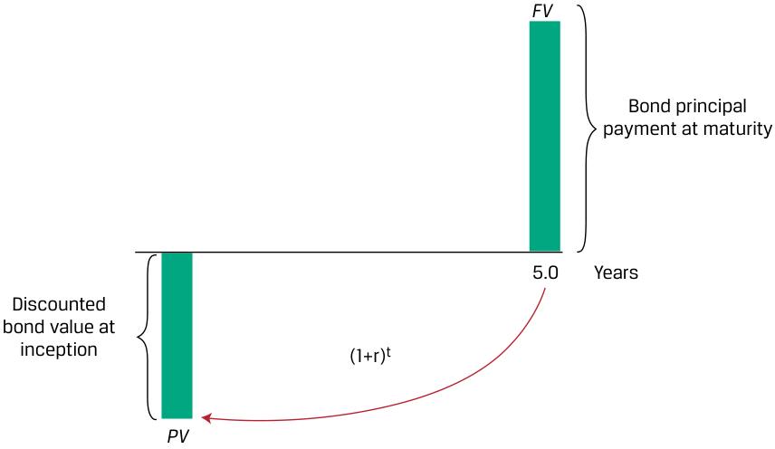
Chú thích hình ảnh: Giá trị trái phiếu chiết khấu tại thời điểm khởi đầu ($\text{PV}$) tăng trưởng theo hệ số $(1+r)^t$ qua $5,0$ năm để đạt tới khoản thanh toán nợ gốc trái phiếu khi đáo hạn ($\text{FV}$).
We may rearrange Equation 5 from earlier to solve for the implied periodic return earned over the life of the instrument ( t periods):
Chúng ta có thể sắp xếp lại Phương trình 5 ở phần trước để giải tìm tỷ suất sinh lợi định kỳ ngầm định kiếm được trong suốt vòng đời của công cụ ($t$ kỳ):
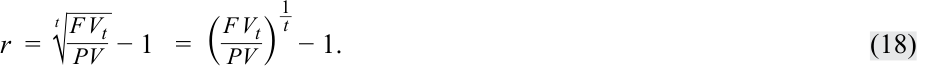
EXAMPLE 8
VÍ DỤ 8 (EXAMPLE 8)
Discount Bond Implied Return
Tỷ suất sinh lợi ngầm định của Trái phiếu Chiết khấu (Discount Bond Implied Return)
Recall from Example 1 that in 2016, German 10-year government bond investors faced a price of EUR100.50 per EUR100 principal and an annual YTM of −0.05 percent at issuance. That is, the German 10-year government bond was initially priced by the market to provide a negative return to the investor. Six years later, these bonds traded at a price ( PV ) of EUR95.72 per EUR100 principal.
Hãy nhớ lại từ Ví dụ 1 rằng vào năm 2016, các nhà đầu tư trái phiếu chính phủ Đức kỳ hạn 10 năm đã đối mặt với mức giá là $100,50\text{ EUR}$ trên mỗi $100\text{ EUR}$ nợ gốc và lợi suất đáo hạn (YTM) hàng năm là $-0,05\%$ khi phát hành. Nghĩa là, trái phiếu chính phủ Đức kỳ hạn 10 năm ban đầu được thị trường định giá để mang lại tỷ suất sinh lợi âm cho nhà đầu tư. Sáu năm sau, những trái phiếu này được giao dịch ở mức giá ($\text{PV}$) là $95,72\text{ EUR}$ trên mỗi $100\text{ EUR}$ nợ gốc.
- What was the initial investor’s implied return on this bond over the six-year holding period?
- Tỷ suất sinh lợi ngầm định của nhà đầu tư ban đầu đối với trái phiếu này trong thời kỳ nắm giữ sáu năm là bao nhiêu?
Solution:
Lời giải (Solution):
−0.81 percent
$-0,81\%$
We can solve for an investor’s annualized return ( r ) using Equation 18 and a PV of 100.5, FV of 95.72, and t of 6 as follows:
Chúng ta có thể giải tìm tỷ suất sinh lợi quy đổi theo năm ($r$) của nhà đầu tư bằng cách sử dụng Phương trình 18 với $\text{PV} = 100,5$, $\text{FV} = 95,72$, và $t = 6$ như sau:
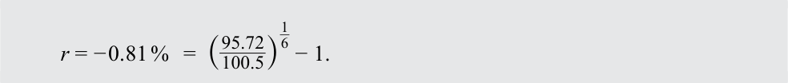
Note that an investor who purchases the discount bond at issuance and receives EUR100 in 10 years expects an implied return equal to the issuance YTM of −0.05 percent. However, the EUR4.78 price decline for the first six years translates into an annualized return of −0.81 percent, which is below the initial YTM of −0.05 percent. This negative return is consistent with an expected decline in the price ( PV ) of a discount bond amid higher inflation.
Lưu ý rằng một nhà đầu tư mua trái phiếu chiết khấu khi phát hành và nhận được $100\text{ EUR}$ sau 10 năm sẽ kỳ vọng mức tỷ suất sinh lợi ngầm định bằng với YTM lúc phát hành là $-0,05\%$. Tuy nhiên, mức giảm giá $4,78\text{ EUR}$ trong sáu năm đầu tiên đã chuyển thành mức tỷ suất sinh lợi quy đổi theo năm là $-0,81\%$, thấp hơn mức YTM ban đầu là $-0,05\%$. Tỷ suất sinh lợi âm này hoàn toàn nhất quán với sự sụt giảm dự kiến trong giá ($\text{PV}$) của một trái phiếu chiết khấu trong bối cảnh lạm phát tăng cao hơn.
- What is the expected return of an investor who purchases the discount bond at EUR95.72 and holds it for the remaining four years?
- Tỷ suất sinh lợi kỳ vọng của một nhà đầu tư mua trái phiếu chiết khấu ở mức giá $95,72\text{ EUR}$ và nắm giữ nó trong bốn năm còn lại là bao nhiêu?
Solution:
Lời giải (Solution):
1.10 percent
$1,10\%$
Here the current price of 95.72 in Equation 18 is now the PV , and the principal of 100 is FV , with t = 4:
Tại đây, mức giá hiện hành $95,72$ trong Phương trình 18 bây giờ đóng vai trò là $\text{PV}$, và nợ gốc $100$ là $\text{FV}$, với $t = 4$:
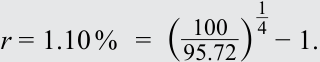
Note that r of 1.10 percent is equal to the YTM for the remaining four years we derived in Example 1. The cumulative returns across the two investors is equal to the initial −0.05 percent YTM, assuming no transaction costs as follows:
Lưu ý rằng $r = 1,10\%$ bằng với mức YTM cho bốn năm còn lại mà chúng ta đã suy ra trong Ví dụ 1. Tỷ suất sinh lợi tích lũy qua hai nhà đầu tư đúng bằng mức YTM ban đầu là $-0,05\%$, giả định không có chi phí giao dịch, như sau:
These relationships are summarized in the following diagram:
Các mối quan hệ này được tóm tắt trong sơ đồ sau:
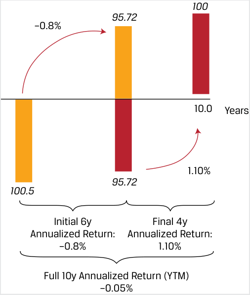
Chú thích hình ảnh: Trong 6 năm đầu (Initial 6y), giá giảm từ $100,5$ xuống $95,72$, tương ứng Tỷ suất sinh lợi quy đổi theo năm (Annualized Return) là $-0,81\%$ (trong hình ghi $-0,8\%$). Trong 4 năm cuối (Final 4y), giá tăng từ $95,72$ lên $100$, tương ứng Tỷ suất sinh lợi quy đổi theo năm là $1,10\%$. Tỷ suất sinh lợi quy đổi theo năm cho toàn bộ 10 năm (Full 10y Annualized Return – YTM) là $-0,05\%$.
Unlike discount bonds, fixed-income instruments that pay periodic interest have cash flows throughout their life until maturity. The uniform discount rate (or internal rate of return) for all promised cash flows is the YTM, a single implied market discount rate for all cash flows regardless of timing as shown for a coupon bond in Exhibit 8.
Khác với trái phiếu chiết khấu, các công cụ thu nhập cố định trả lãi định kỳ có các dòng tiền phát sinh trong suốt vòng đời của chúng cho đến khi đáo hạn. Lãi suất chiết khấu đồng nhất (hay tỷ suất hoàn vốn nội bộ) cho tất cả các dòng tiền đã cam kết chính là lợi suất đáo hạn (YTM), một mức lãi suất chiết khấu thị trường ngầm định duy nhất áp dụng cho mọi dòng tiền bất kể thời điểm phát sinh như được thể hiện đối với trái phiếu trả lãi định kỳ trong Bảng 8 (Exhibit 8).
Exhibit 8: Coupon Bond Implied Return
Bảng 8: Tỷ suất sinh lợi ngầm định của Trái phiếu trả lãi định kỳ (Exhibit 8: Coupon Bond Implied Return)
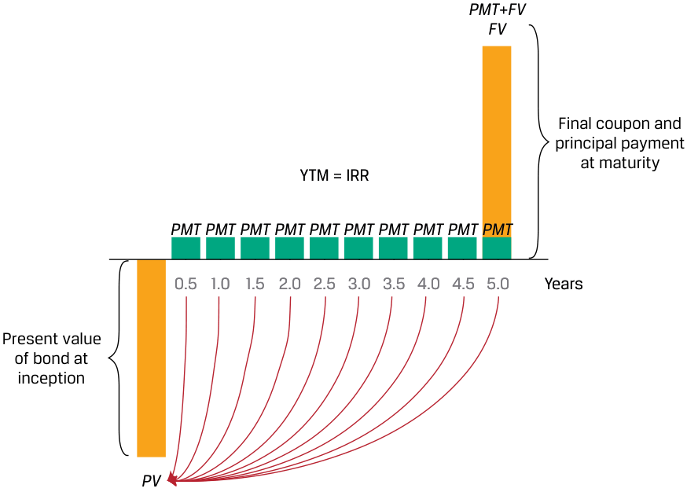
Chú thích hình ảnh: Giá trị hiện tại của trái phiếu tại thời điểm khởi đầu ($\text{PV}$), các dòng tiền coupon định kỳ ($\text{PMT}$) từ năm $0,5$ đến $4,5$, và khoản thanh toán coupon cuối cùng cộng nợ gốc khi đáo hạn ($\text{PMT} + \text{FV}$) tại năm $5,0$ được liên kết với nhau qua mức lợi suất đáo hạn $\text{YTM} = \text{IRR}$.
The YTM assumes an investor expects to receive all promised cash flows through maturity and reinvest any cash received at the same YTM. For coupon bonds, this involves periodic interest payments only, while for level payment instruments such as mortgages, the calculation assumes both interest and amortized principal may be invested at the same rate. Like other internal rates of return, the YTM cannot be solved using an equation, but it may be calculated using iteration with a spreadsheet or calculator, a process that solves for r in Equation 19, as follows:
PV(Coupon Bond)
Lợi suất đáo hạn (YTM) giả định rằng nhà đầu tư kỳ vọng sẽ nhận được tất cả các dòng tiền đã cam kết cho đến khi đáo hạn và tái đầu tư bất kỳ khoản tiền mặt nào nhận được ở cùng mức YTM đó. Đối với trái phiếu trả lãi định kỳ, điều này chỉ liên quan đến các khoản thanh toán tiền lãi định kỳ, trong khi đối với các công cụ thanh toán đều như khoản vay thế chấp, phép tính giả định cả tiền lãi và nợ gốc được hoàn trả đều có thể được tái đầu tư ở cùng một mức lãi suất. Giống như các tỷ suất hoàn vốn nội bộ khác, YTM không thể giải trực tiếp bằng một phương trình đại số đơn giản, nhưng có thể được tính bằng phương pháp lặp (iteration) với bảng tính hoặc máy tính tài chính — một quá trình giải tìm $r$ trong Phương trình 19 như sau:
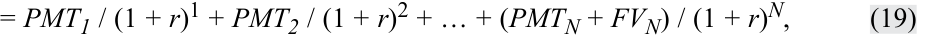
where FV equals a bond’s principal and N is the number of periods to maturity.
The Microsoft Excel or Google Sheets YIELD function can be used to calculate YTM for fixed-income instruments with periodic interest and full principal payment at maturity:
trong đó $\text{FV}$ bằng nợ gốc của trái phiếu và $N$ là số kỳ cho đến khi đáo hạn.
= YIELD (settlement, maturity, rate, pr, redemption, frequency, [basis])
where:
Hàm YIELD trong Microsoft Excel hoặc Google Sheets có thể được sử dụng để tính YTM cho các công cụ thu nhập cố định có trả lãi định kỳ và thanh toán toàn bộ nợ gốc khi đáo hạn:
settlement = settlement date entered using the DATE function;
maturity = maturity date entered using the DATE function;
=YIELD(settlement, maturity, rate, pr, redemption, frequency, [basis])
rate = semi-annual (or periodic) coupon;
pr = price per 100 face value;
trong đó:
redemption = future value at maturity;
frequency = number of coupons per year; and
-
settlement = ngày thanh toán giao dịch (settlement date) được nhập bằng hàm DATE;
-
maturity = ngày đáo hạn (maturity date) được nhập bằng hàm DATE;
-
rate = lãi suất coupon hàng năm (trả định kỳ hoặc nửa năm một lần);
-
pr = mức giá trên mỗi 100 đơn vị mệnh giá;
-
redemption = giá trị tương lai (giá trị hoàn trả) khi đáo hạn;
-
frequency = số lần trả coupon mỗi năm; và
-
[basis] = quy ước đếm ngày (day count convention), thông thường là 0 đối với trái phiếu Hoa Kỳ (quy ước đếm ngày 30/360).
[basis] = day count convention, typically 0 for US bonds (30/360 day count).
Example 9 illustrates the implied return on fixed income instruments with periodic interest.
Ví dụ 9 minh họa tỷ suất sinh lợi ngầm định đối với các công cụ thu nhập cố định có trả lãi định kỳ.
EXAMPLE 9
VÍ DỤ 9 (EXAMPLE 9)
Greek Coupon Bond Implied Return
Tỷ suất sinh lợi ngầm định của Trái phiếu trả lãi định kỳ Hy Lạp (Greek Coupon Bond Implied Return)
Recall from Example 2 that seven-year Greek government bonds issued in 2020 with a 2.00 percent annual coupon had a price of EUR93.091 per EUR100 principal two years later.
Hãy nhớ lại từ Ví dụ 2 rằng trái phiếu chính phủ Hy Lạp kỳ hạn bảy năm được phát hành vào năm 2020 với lãi suất coupon hàng năm $2,00\%$ có mức giá là $93,091\text{ EUR}$ trên mỗi $100\text{ EUR}$ nợ gốc vào hai năm sau đó.
- What is the implied two-year return for an investor able to reinvest periodic interest at the original YTM of 2.00 percent?
- Tỷ suất sinh lợi ngầm định trong hai năm đối với một nhà đầu tư có khả năng tái đầu tư tiền lãi định kỳ ở mức YTM ban đầu là $2,00\%$ là bao nhiêu?
Solution:
−1.445 percent
Lời giải (Solution):
Using Equation 18 as for the discount bond, we must first calculate the future value ( FV ) after two years including the future price of 93.091 and all cash flows reinvested to that date:
$-1,445\%$
FV2 = PMT 1(1 + r ) + PMT2 + PV2
Sử dụng Phương trình 18 giống như đối với trái phiếu chiết khấu, trước tiên chúng ta phải tính giá trị tương lai ($\text{FV}$) sau hai năm bao gồm mức giá tương lai là $93,091$ và tất cả các dòng tiền được tái đầu tư tính đến ngày đó:
FV2 = 97.13 = 2 × (1.02) + 2 + 93.091
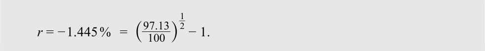
This negative annualized return was due to a EUR6.91 (=100 − 93.091) capital loss which exceeded the periodic interest plus reinvestment proceeds of EUR4.04 (=2 × (1.02) + 2). The fall in the price of the bond to EUR93.091 in 2022 was a result of a rise in Eurozone inflation over the period.
Tỷ suất sinh lợi quy đổi theo năm mang giá trị âm này là do khoản lỗ vốn $6,91\text{ EUR}$ ($= 100 - 93,091$) đã vượt quá tổng tiền lãi định kỳ cộng với tiền thu được từ tái đầu tư là $4,04\text{ EUR}$ ($= 2 \times (1,02) + 2$). Sự sụt giảm giá trái phiếu xuống mức $93,091\text{ EUR}$ vào năm 2022 là kết quả của sự gia tăng lạm phát tại khu vực đồng Euro trong giai đoạn đó.
For an investor purchasing the 2 percent coupon bond in 2022 at a price of EUR93.091, recall that we solved for an r (or YTM) of 3.532 percent. Note that this YTM calculation for the remaining five years assumes all cash flows can be reinvested at 3.532 percent through maturity. The rate(s) at which periodic interest can be reinvested is critical for the implied return calculation for coupon bonds as shown below. YTM is computed assuming that the bond is held to maturity.
Đối với một nhà đầu tư mua trái phiếu coupon $2\%$ vào năm 2022 ở mức giá $93,091\text{ EUR}$, hãy nhớ lại rằng chúng ta đã giải tìm được $r$ (hay YTM) là $3,532\%$. Lưu ý rằng phép tính YTM này cho năm năm còn lại giả định tất cả các dòng tiền có thể được tái đầu tư ở mức $3,532\%$ cho đến khi đáo hạn. Mức lãi suất mà tại đó tiền lãi định kỳ có thể được tái đầu tư đóng vai trò then chốt đối với phép tính tỷ suất sinh lợi ngầm định cho các trái phiếu trả lãi định kỳ như được thể hiện dưới đây. YTM được tính toán với giả định rằng trái phiếu được nắm giữ cho đến khi đáo hạn.
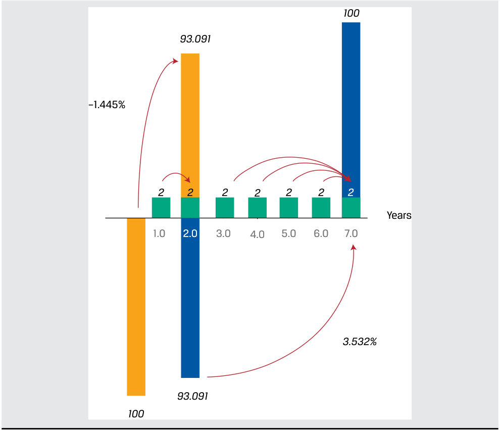
Chú thích hình ảnh: Trái phiếu trả coupon $2$ mỗi năm từ Năm $1,0$ đến Năm $7,0$. Trong 2 năm đầu (từ Năm 0 đến Năm $2,0$), giá giảm từ $100$ xuống $93,091$, tương ứng tỷ suất sinh lợi quy đổi theo năm là $-1,445\%$. Trong 5 năm cuối (từ Năm $2,0$ đến Năm $7,0$), giá tăng từ $93,091$ lên $100$ khi đáo hạn, tương ứng lợi suất đáo hạn YTM là $3,532\%$.
Equity Instruments, Implied Return, and Implied Growth
Công cụ Vốn chủ sở hữu, Tỷ suất sinh lợi ngầm định và Tốc độ tăng trưởng ngầm định (Equity Instruments, Implied Return, and Implied Growth)
As noted in the discussion of calculating the present value of an equity investment, the price of a share of stock reflects not only the required return but also the growth of cash flows. If we begin with an assumption of constant growth of dividends from Equation 14, we can rearrange the formula as follows:
Như đã lưu ý trong phần thảo luận về cách tính giá trị hiện tại của một khoản đầu tư vốn chủ sở hữu, giá của một cổ phiếu phản ánh không chỉ tỷ suất sinh lợi yêu cầu mà còn cả tốc độ tăng trưởng của các dòng tiền. Nếu chúng ta bắt đầu với giả định cổ tức tăng trưởng không đổi từ Phương trình 14, chúng ta có thể sắp xếp lại công thức như sau:
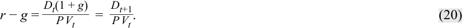
The left-hand side of Equation 20 simply reflects the difference between the required return and the constant growth rate, and the right-hand side is the dividend yield of the stock based on expected dividends over the next period. Thus, the implied return on a stock given its expected dividend yield and growth is given by Equation 21, as follows:
Vế trái của Phương trình 20 đơn giản phản ánh sự chênh lệch giữa tỷ suất sinh lợi yêu cầu và tốc độ tăng trưởng không đổi, còn vế phải là lợi suất cổ tức (dividend yield) của cổ phiếu dựa trên cổ tức dự kiến trong kỳ tiếp theo. Như vậy, tỷ suất sinh lợi ngầm định của một cổ phiếu khi biết lợi suất cổ tức dự kiến và tốc độ tăng trưởng của nó được cho bởi Phương trình 21 như sau:
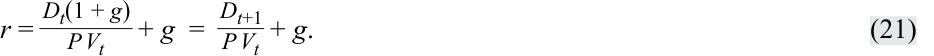
Simply put, if we assume that a stock’s dividend grows at a constant rate in perpetuity, the stock’s implied return is equal to its expected dividend yield plus the constant growth rate.
Nói một cách đơn giản, nếu chúng ta giả định rằng cổ tức của một cổ phiếu tăng trưởng với tốc độ không đổi đến vĩnh viễn, thì tỷ suất sinh lợi ngầm định của cổ phiếu đó bằng lợi suất cổ tức dự kiến cộng với tốc độ tăng trưởng không đổi.
Alternatively, we may be interested in solving for a stock’s implied growth rate, and this relation is given by Equation 22:
Ngoài ra, chúng ta có thể quan tâm đến việc giải tìm tốc độ tăng trưởng ngầm định (implied growth rate) của một cổ phiếu, và mối quan hệ này được cho bởi Phương trình 22:
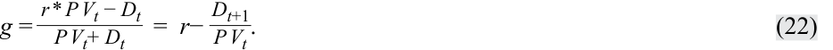
If a stock’s next expected dividend is known, then we can calculate the implied growth by deducting its expected dividend yield from its required return.
Nếu biết trước khoản cổ tức dự kiến tiếp theo của một cổ phiếu, thì chúng ta có thể tính tốc độ tăng trưởng ngầm định bằng cách lấy tỷ suất sinh lợi yêu cầu trừ đi lợi suất cổ tức dự kiến của nó.
EXAMPLE 10
VÍ DỤ 10 (EXAMPLE 10)
Implied Return and Growth for a Stock
Tỷ suất sinh lợi ngầm định và Tốc độ tăng trưởng ngầm định của một Cổ phiếu (Implied Return and Growth for a Stock)
Coca-Cola Company stock trades at a share price of USD63.00 and its annualized expected dividend per share during the next year is USD1.76.
Cổ phiếu của Công ty Coca-Cola (Coca-Cola Company) đang giao dịch ở mức giá $63,00\text{ USD}$ một cổ phiếu và cổ tức dự kiến quy đổi theo năm trên mỗi cổ phiếu trong năm tới là $1,76\text{ USD}$.
- If an analyst expects Coca-Cola’s dividend per share to increase at a constant 4 percent per year indefinitely, calculate the required return expected by investors.
- Nếu một nhà phân tích kỳ vọng cổ tức trên mỗi cổ phiếu của Coca-Cola sẽ tăng với tốc độ không đổi $4\%$ mỗi năm vô thời hạn, hãy tính tỷ suất sinh lợi yêu cầu mà các nhà đầu tư kỳ vọng.
Solution:
Lời giải (Solution):
6.79 percent Using Equation 21,
$6,79\%$
Sử dụng Phương trình 21:
The required return expected for Coca-Cola stock is 6.79 percent given its current price, expected dividend, and expected dividend growth rate. Investor expectations of future stock returns are inferred by the combination of the current price, expected future cash flows and the cash flow growth rate. Suppose that, instead of attempting to estimate the required return, an investor wishes to determine an implied dividend growth rate. In this case, the investor must assume a future stock return, as in question 2.
Tỷ suất sinh lợi yêu cầu được kỳ vọng đối với cổ phiếu Coca-Cola là $6,79\%$ khi biết giá hiện hành, cổ tức dự kiến và tốc độ tăng trưởng cổ tức dự kiến của nó. Kỳ vọng của nhà đầu tư về tỷ suất sinh lợi cổ phiếu trong tương lai được suy ra từ sự kết hợp giữa mức giá hiện hành, các dòng tiền dự kiến trong tương lai và tốc độ tăng trưởng dòng tiền. Giả sử rằng, thay vì cố gắng ước tính tỷ suất sinh lợi yêu cầu, một nhà đầu tư lại muốn xác định tốc độ tăng trưởng cổ tức ngầm định. Trong trường hợp này, nhà đầu tư phải giả định một mức tỷ suất sinh lợi cổ phiếu trong tương lai, như trong câu hỏi 2.
- If the analyst believes that Coca-Cola stock investors should expect a return of 7 percent, calculate the implied dividend growth rate for Coca-Cola.
- Nếu nhà phân tích tin rằng các nhà đầu tư cổ phiếu Coca-Cola nên kỳ vọng một mức tỷ suất sinh lợi là $7\%$, hãy tính tốc độ tăng trưởng cổ tức ngầm định cho Coca-Cola.
Solution:
Lời giải (Solution):
4.21 percent Using Equation 22,
$4,21\%$
Sử dụng Phương trình 22:
The implied dividend growth rate for Coca-Cola stock is 4.21 percent given its expected return, price, and expected dividend. Given that a higher expected return is assumed in this question compared to the case in question 1, the result is a higher implied dividend growth rate to justify Coca-Cola’s stock price of USD63.00.
Tốc độ tăng trưởng cổ tức ngầm định của cổ phiếu Coca-Cola là $4,21\%$ khi biết tỷ suất sinh lợi kỳ vọng, mức giá và cổ tức dự kiến của nó. Do một mức tỷ suất sinh lợi kỳ vọng cao hơn được giả định trong câu hỏi này so với trường hợp ở câu hỏi 1, nên kết quả dẫn đến một tốc độ tăng trưởng cổ tức ngầm định cao hơn để biện minh cho mức giá cổ phiếu $63,00\text{ USD}$ của Coca-Cola.
Rather than comparing equity share prices directly in currency terms, a common practice is to compare ratios of share price to earnings per share, or the price-to-earnings ratio .
Thay vì so sánh trực tiếp giá cổ phiếu tính theo đơn vị tiền tệ, một thông lệ phổ biến là so sánh tỷ số giữa giá cổ phiếu trên thu nhập mỗi cổ phiếu, hay hệ số giá trên thu nhập (price-to-earnings ratio – P/E).
PRICE-TO-EARNINGS RATIO
HỆ SỐ GIÁ TRÊN THU NHẬP (PRICE-TO-EARNINGS RATIO)
Price-to-earnings ratio is a relative valuation metric that improves comparability by controlling for a known driver of value (earnings per share) as well as currency. It is analogous to expressing the price of real estate using a price per square meter.
Hệ số giá trên thu nhập (price-to-earnings ratio) là một thước đo định giá tương đối (relative valuation metric) giúp cải thiện khả năng so sánh bằng cách kiểm soát một yếu tố dẫn dắt giá trị đã biết (thu nhập trên mỗi cổ phiếu – earnings per share) cũng như đơn vị tiền tệ. Nó tương tự như việc biểu thị giá bất động sản bằng đơn giá trên mỗi mét vuông.
A stock trading at a price-to-earnings ratio of 20 implies that its share price is 20 times its earnings per share and investors are willing to pay 20 times earnings per share for each share traded, which is more expensive than a stock trading at a price to earnings ratio of 10.
Một cổ phiếu đang giao dịch ở hệ số giá trên thu nhập (P/E) bằng 20 hàm ý rằng giá cổ phiếu của nó gấp 20 lần thu nhập trên mỗi cổ phiếu và các nhà đầu tư sẵn sàng trả gấp 20 lần thu nhập trên mỗi cổ phiếu cho mỗi cổ phiếu được giao dịch, tức là đắt hơn so với một cổ phiếu đang giao dịch ở hệ số giá trên thu nhập bằng 10.
Price-to-earnings ratios not only are used for individual stocks but also are a valuation metric for stock indexes, such S&P 500, FTSE 100, or Nikkei 225. Here, the stock index value is divided by a weighted sum of the index constituents’ earnings per share. This will be explored in depth later in the curriculum, but we can relate the price-to-earnings ratio to our earlier discussion of relating a stock’s price ( PV ) to expected future cash flows to make some useful observations. First, recall Equation 14:
Hệ số giá trên thu nhập không chỉ được sử dụng cho các cổ phiếu riêng lẻ mà còn là một thước đo định giá cho các chỉ số chứng khoán, chẳng hạn như S&P 500, FTSE 100, hoặc Nikkei 225. Tại đây, giá trị chỉ số chứng khoán được chia cho tổng có trọng số của thu nhập trên mỗi cổ phiếu của các công ty thành phần trong chỉ số. Nội dung này sẽ được khám phá sâu hơn ở phần sau của chương trình học, nhưng chúng ta có thể liên hệ hệ số giá trên thu nhập với phần thảo luận trước đó về việc gắn kết giá cổ phiếu ($\text{PV}$) với các dòng tiền dự kiến trong tương lai để rút ra một số nhận xét hữu ích. Trước hết, hãy nhớ lại Phương trình 14:
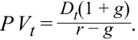
We can divide both sides by Et , earnings per share for period t , to obtain:
Chúng ta có thể chia cả hai vế cho $E_t$, thu nhập trên mỗi cổ phiếu (earnings per share) của kỳ $t$, để thu được:
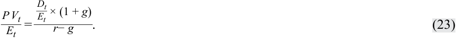
The left-hand side of Equation 23 is the price-to-earnings ratio, whereas the first term in the numerator on the right is the proportion of earnings distributed to shareholders as dividends known as the dividend payout ratio .
Vế trái của Phương trình 23 là hệ số giá trên thu nhập (P/E hiện tại – trailing P/E), trong khi thừa số đầu tiên ở tử số bên vế phải là tỷ trọng thu nhập được phân phối cho các cổ đông dưới dạng cổ tức, được gọi là tỷ lệ chi trả cổ tức (dividend payout ratio).
Given a price-to-earnings ratio and dividend payout ratio, we can solve for either required return or implied dividend growth rate (given an assumption about the other). The required return is useful in understanding investor return expectations on a forward-looking basis. The implied constant growth rate is useful to compare with the company’s expected growth rate and historical growth rate. For example, if the implied constant growth rate is 10 percent yet the analyst estimates that the company can only grow by 5 percent, the analyst may judge the shares to be overvalued.
Khi biết hệ số giá trên thu nhập và tỷ lệ chi trả cổ tức, chúng ta có thể giải tìm tỷ suất sinh lợi yêu cầu hoặc tốc độ tăng trưởng cổ tức ngầm định (khi có giả định về đại lượng còn lại). Tỷ suất sinh lợi yêu cầu rất hữu ích trong việc tìm hiểu kỳ vọng sinh lợi của nhà đầu tư trên cơ sở hướng tới tương lai (forward-looking basis). Tốc độ tăng trưởng không đổi ngầm định lại hữu ích để so sánh với tốc độ tăng trưởng dự kiến và tốc độ tăng trưởng lịch sử của công ty. Ví dụ, nếu tốc độ tăng trưởng không đổi ngầm định là $10\%$ nhưng nhà phân tích ước tính rằng công ty chỉ có thể tăng trưởng ở mức $5\%$, nhà phân tích có thể đánh giá rằng cổ phiếu đó đang bị định giá quá cao (overvalued).
In practice, the forward price-to-earnings ratio or ratio of its share price to an estimate of its next period (t + 1) earnings per share is commonly used. With it, we can simplify the previous equation as follows:
Trên thực tế, hệ số giá trên thu nhập dự phóng (forward price-to-earnings ratio – forward P/E), hay tỷ số giữa giá cổ phiếu trên mức ước tính thu nhập mỗi cổ phiếu của kỳ tiếp theo ($t + 1$), thường được sử dụng phổ biến. Với hệ số này, chúng ta có thể rút gọn phương trình trước đó như sau:
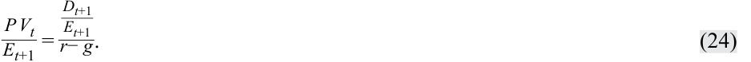
From Equation 24, we can see that forward price-to-earnings ratio is positively related to higher expected dividend payout ratio and higher expected growth but is negatively related to the required return.
Từ Phương trình 24, chúng ta có thể thấy rằng hệ số giá trên thu nhập dự phóng có mối quan hệ đồng biến (positively related) với tỷ lệ chi trả cổ tức dự kiến cao hơn và tốc độ tăng trưởng dự kiến cao hơn, nhưng có mối quan hệ nghịch biến (negatively related) với tỷ suất sinh lợi yêu cầu.
EXAMPLE 11
VÍ DỤ 11 (EXAMPLE 11)
Implied Return and Growth from Price to Earnings Ratio
Tỷ suất sinh lợi ngầm định và Tốc độ tăng trưởng ngầm định từ Hệ số Giá trên Thu nhập (Implied Return and Growth from Price to Earnings Ratio)
- Suppose Coca-Cola stock trades at a forward price to earnings ratio of 28, its expected dividend payout ratio is 70 percent, and analysts believe that its dividend will grow at a constant rate of 4 percent per year. Calculate Coca-Cola’s required return.
- Giả sử cổ phiếu Coca-Cola giao dịch ở hệ số giá trên thu nhập dự phóng (forward P/E) là 28, tỷ lệ chi trả cổ tức dự kiến của nó là $70\%$, và các nhà phân tích tin rằng cổ tức của công ty sẽ tăng trưởng với tốc độ không đổi là $4\%$ mỗi năm. Hãy tính tỷ suất sinh lợi yêu cầu của Coca-Cola.
Solution :
Lời giải (Solution):
$6,50\%$
6.50 percent Using Equation 24,
Sử dụng Phương trình 24:
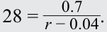
Solving this equation for r, Coca-Cola’s required return is 6.50 percent. Given the above result for Coca-Cola’s required return, it should come as no surprise that if we instead assume that the required return on Coca-Cola stock is 6.50 percent, then we would find that Coca-Cola’s implied growth rate is 4 percent, and this result is confirmed in question 2.
Giải phương trình này để tìm $r$, tỷ suất sinh lợi yêu cầu của Coca-Cola là $6,50\%$. Từ kết quả trên cho tỷ suất sinh lợi yêu cầu của Coca-Cola, không có gì đáng ngạc nhiên khi nếu thay vào đó chúng ta giả định rằng tỷ suất sinh lợi yêu cầu đối với cổ phiếu Coca-Cola là $6,50\%$, thì chúng ta sẽ tìm ra tốc độ tăng trưởng ngầm định của Coca-Cola là $4\%$, và kết quả này được xác nhận trong câu hỏi 2.
- Suppose Coca-Cola stock trades at a forward price to earnings ratio of 28, its expected dividend payout ratio is 70 percent, and analysts believe that its required return is 6.50 percent. Calculate Coca-Cola’s implied growth rate.
- Giả sử cổ phiếu Coca-Cola giao dịch ở hệ số giá trên thu nhập dự phóng là 28, tỷ lệ chi trả cổ tức dự kiến của nó là $70\%$, và các nhà phân tích tin rằng tỷ suất sinh lợi yêu cầu của nó là $6,50\%$. Hãy tính tốc độ tăng trưởng ngầm định của Coca-Cola.
Solution:
Lời giải (Solution):
4.00 percent Using Equation 24,
$4,00\%$
28 =0.70 0.065− _g.
Sử dụng Phương trình 24:
Solving this equation for g , Coca-Cola’s implied growth rate is 4.00 percent. In particular, Coca-Cola’s return is expected to be 2.5 percent greater than its dividend growth rate (i.e., 6.50% − 4.00%).
Giải phương trình này để tìm $g$, tốc độ tăng trưởng ngầm định của Coca-Cola là $4,00\%$. Cụ thể, tỷ suất sinh lợi của Coca-Cola được kỳ vọng sẽ cao hơn $2,5\%$ so với tốc độ tăng trưởng cổ tức của nó (tức là $6,50\% - 4,00\%$).
As discussed earlier, the same principles apply to understanding required returns and growth rates on stock indexes.
Như đã thảo luận trước đó, các nguyên lý tương tự cũng được áp dụng để tìm hiểu tỷ suất sinh lợi yêu cầu và tốc độ tăng trưởng của các chỉ số chứng khoán.
- Một chỉ số chứng khoán đang giao dịch ở hệ số giá trên thu nhập dự phóng là 19. Nếu tỷ lệ chi trả cổ tức dự kiến của chỉ số là $60\%$, và các nhà đầu tư cổ phiếu kỳ vọng mức tỷ suất sinh lợi của chỉ số là $8\%$, hãy tính tốc độ tăng trưởng không đổi ngầm định cho chỉ số này.
- A stock index is trading at a forward price to earnings ratio of 19. If the expected dividend payout ratio on the index is 60 percent, and equity investors expect an index rate of return of 8 percent, calculate the implied constant growth rate for the index.
Lời giải (Solution):
Solution:
$4,84\%$
4.84 percent Using Equation 24:
Sử dụng Phương trình 24:
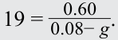
Solving for g , we find that investors expect the index’s dividend growth rate to be 4.84 percent in the future. Alternatively, we could assume that investors expect a 4.84 percent growth rate and solve for r to calculate 8 percent as the required return. Thus, the index forward price-to-earnings ratio of 19 and an expected dividend payout ratio of 60 percent combine to reflect expectations of 8 percent return and 4.84 percent growth. Specifically, the required return exceeds the implied dividend growth rate by 3.16 percent (i.e., 8% − 4.84%).
Giải tìm $g$, chúng ta thấy rằng các nhà đầu tư kỳ vọng tốc độ tăng trưởng cổ tức của chỉ số sẽ là $4,84\%$ trong tương lai. Ngược lại, chúng ta có thể giả định rằng các nhà đầu tư kỳ vọng tốc độ tăng trưởng là $4,84\%$ và giải tìm $r$ để tính ra mức tỷ suất sinh lợi yêu cầu là $8\%$. Do đó, hệ số giá trên thu nhập dự phóng của chỉ số là 19 và tỷ lệ chi trả cổ tức dự kiến là $60\%$ kết hợp lại để phản ánh kỳ vọng về mức tỷ suất sinh lợi $8\%$ và tốc độ tăng trưởng $4,84\%$. Cụ thể, tỷ suất sinh lợi yêu cầu vượt quá tốc độ tăng trưởng cổ tức ngầm định một mức là $3,16\%$ (tức là $8\% - 4,84\%$).
An important point from the prior results is that equity prices, whether expressed simply as price or as a price-to-earnings ratio, reflect combined expectations about future returns and growth. Expectations of returns and growth are linked together by the difference between r and g . For example, the Coca-Cola example using a price-to-earnings ratio of 28 describes a situation in which investors must believe that the required return on Coca-Cola stock is 2.5 percent above its growth rate.
Một điểm quan trọng rút ra từ các kết quả trước là giá cổ phiếu, cho dù được biểu thị đơn giản dưới dạng mức giá hay dưới dạng hệ số giá trên thu nhập, đều phản ánh những kỳ vọng kết hợp về tỷ suất sinh lợi và tốc độ tăng trưởng trong tương lai. Kỳ vọng về tỷ suất sinh lợi và tốc độ tăng trưởng được liên kết chặt chẽ với nhau thông qua mức chênh lệch giữa $r$ và $g$. Ví dụ, trường hợp của Coca-Cola sử dụng hệ số giá trên thu nhập bằng 28 mô tả một tình huống trong đó các nhà đầu tư phải tin rằng tỷ suất sinh lợi yêu cầu đối với cổ phiếu Coca-Cola cao hơn $2,5\%$ so với tốc độ tăng trưởng của nó.
- Suppose Coca-Cola stock trades at a forward price to earnings ratio of 28 and its expected dividend payout ratio is 70 percent. Analysts believe that Coca-Cola stock should earn a 9 percent return and that its dividends will grow by 4.50 percent per year indefinitely. Recommend a course of action for an investor interested in taking a position in Coca-Cola stock.
- Giả sử cổ phiếu Coca-Cola giao dịch ở hệ số giá trên thu nhập dự phóng là 28 và tỷ lệ chi trả cổ tức dự kiến của nó là $70\%$. Các nhà phân tích tin rằng cổ phiếu Coca-Cola cần phải mang lại mức tỷ suất sinh lợi $9\%$ và cổ tức của nó sẽ tăng trưởng $4,50\%$ mỗi năm vô thời hạn. Hãy khuyến nghị một phương án hành động cho một nhà đầu tư đang quan tâm đến việc mở vị thế đối với cổ phiếu Coca-Cola.
Solution:
Lời giải (Solution):
Take a short position in Coca-Cola stock. If we evaluate the above parameters using Equation 24, we can see that this results in an inequality.
Mở vị thế bán khống (short position) đối với cổ phiếu Coca-Cola. Nếu chúng ta đánh giá các tham số trên bằng cách sử dụng Phương trình 24, chúng ta có thể thấy rằng điều này dẫn đến một bất đẳng thức: (Xem tiếp phần lời giải ở đầu Phần 3/4)